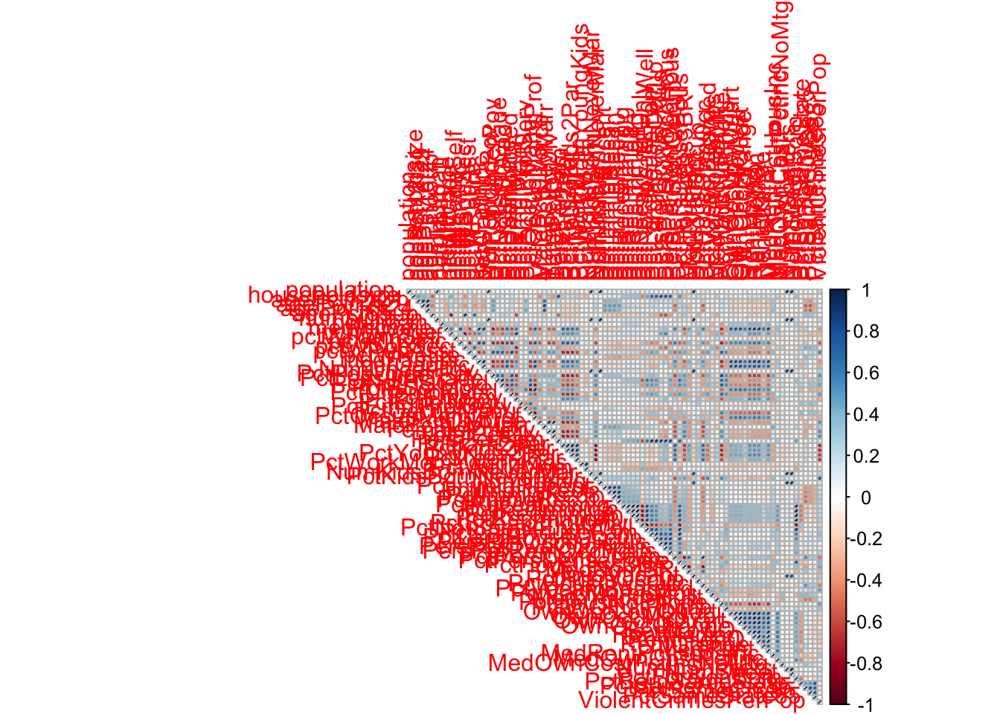
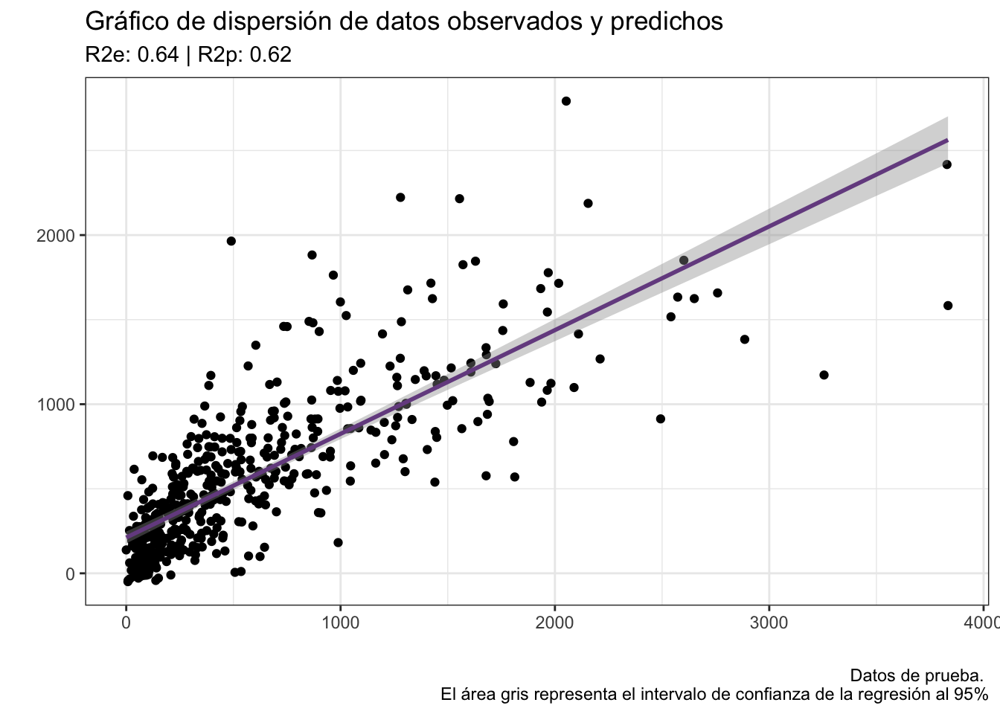

# Tema personalizado
blank_theme <- function(aspect.ratio = 1/1.61){
theme(panel.grid.minor = element_blank(),
panel.grid.major = element_blank(),
panel.background = element_blank(),
axis.line = element_blank(),
aspect.ratio = aspect.ratio,
axis.ticks = element_blank(),
text = element_text(colour = "gray50"), # Eliminar
legend.position = "none"
)
}Para esta sección utilizaremos los datos de la base crime.csv. El objetivo será predecir la tasa de crimenes/poblacion a partir de otras 88 variables:
La variable que nos interesa predecir es el la columna ViolentCrimesPerPop). Apliquemos un modelo de regresión lineal múltiple incluyendo todas las variables, sin dividir los datos en entrenamiento-prueba y sin escalarlos. Tampoco filtraremos los datos para evitar una fuga de información:
dr.df <- read.csv("data/crime.csv")[,-c(1)]
head(dr.df)dr.lm <- lm(ViolentCrimesPerPop~., data = dr.df)
summary(dr.lm)##
## Call:
## lm(formula = ViolentCrimesPerPop ~ ., data = dr.df)
##
## Residuals:
## Min 1Q Median 3Q Max
## -1776.25 -184.04 -36.85 126.83 2194.09
##
## Coefficients: (2 not defined because of singularities)
## Estimate Std. Error t value Pr(>|t|)
## (Intercept) -1.195e+03 3.295e+03 -0.363 0.716842
## population 2.324e-04 2.049e-03 0.113 0.909703
## householdsize -7.569e+01 1.161e+02 -0.652 0.514556
## agePct12t21 8.262e+00 1.279e+01 0.646 0.518346
## agePct12t29 -3.394e+01 1.265e+01 -2.684 0.007344 **
## agePct16t24 1.250e+01 1.832e+01 0.682 0.495175
## agePct65up -1.119e+01 1.094e+01 -1.023 0.306440
## numbUrban -7.223e-04 2.023e-03 -0.357 0.721118
## pctUrban 1.245e+00 4.790e-01 2.598 0.009436 **
## medIncome -1.430e-02 7.156e-03 -1.998 0.045806 *
## pctWWage -9.557e+00 5.869e+00 -1.628 0.103596
## pctWFarmSelf 2.328e+01 1.577e+01 1.476 0.139992
## pctWInvInc -6.764e+00 2.495e+00 -2.711 0.006771 **
## pctWSocSec 7.969e+00 5.907e+00 1.349 0.177469
## pctWPubAsst 7.796e+00 5.838e+00 1.336 0.181861
## pctWRetire -9.214e+00 3.761e+00 -2.450 0.014395 *
## medFamInc 9.378e-03 6.899e-03 1.359 0.174165
## perCapInc 8.988e-04 7.623e-03 0.118 0.906152
## NumUnderPov 2.705e-05 2.451e-03 0.011 0.991196
## PctPopUnderPov -6.144e+00 4.830e+00 -1.272 0.203515
## PctLess9thGrade -1.551e+01 6.320e+00 -2.454 0.014224 *
## PctNotHSGrad 5.368e+00 4.856e+00 1.105 0.269148
## PctBSorMore 2.611e+00 3.528e+00 0.740 0.459310
## PctUnemployed -1.734e+00 8.005e+00 -0.217 0.828581
## PctEmploy 9.473e+00 4.809e+00 1.970 0.048991 *
## PctEmplManu -3.843e+00 2.133e+00 -1.802 0.071766 .
## PctEmplProfServ -3.164e-01 2.939e+00 -0.108 0.914297
## PctOccupManu 1.303e+00 4.631e+00 0.281 0.778521
## PctOccupMgmtProf 5.127e+00 4.664e+00 1.099 0.271738
## MalePctDivorce 1.522e+02 6.854e+01 2.220 0.026545 *
## MalePctNevMarr 8.419e+00 4.851e+00 1.735 0.082826 .
## FemalePctDiv 9.881e+01 7.178e+01 1.376 0.168838
## TotalPctDiv -2.388e+02 1.391e+02 -1.717 0.086211 .
## PersPerFam -1.409e+02 3.512e+02 -0.401 0.688213
## PctFam2Par 1.025e+01 8.784e+00 1.167 0.243302
## PctKids2Par -2.718e+01 6.971e+00 -3.899 9.99e-05 ***
## PctYoungKids2Par 2.794e+00 2.394e+00 1.167 0.243347
## PctTeen2Par 3.471e-01 2.206e+00 0.157 0.874962
## PctWorkMomYoungKids 3.659e+00 2.772e+00 1.320 0.186938
## PctWorkMom -9.343e+00 4.011e+00 -2.330 0.019934 *
## NumKidsBornNeverMar -5.637e-03 4.186e-03 -1.347 0.178236
## PctKidsBornNeverMar 5.992e+01 9.252e+00 6.476 1.19e-10 ***
## NumImmig 1.029e-03 6.746e-04 1.525 0.127400
## PctImmigRecent 2.153e+00 2.427e+00 0.887 0.375132
## PctImmigRec5 -7.823e-01 3.071e+00 -0.255 0.798944
## PctImmigRec8 -1.118e+00 3.000e+00 -0.373 0.709366
## PctImmigRec10 1.574e+00 1.941e+00 0.811 0.417541
## PctRecentImmig -1.221e+01 4.962e+01 -0.246 0.805635
## PctRecImmig5 -2.038e+01 6.021e+01 -0.339 0.734999
## PctRecImmig8 1.590e+01 5.660e+01 0.281 0.778799
## PctRecImmig10 -1.628e+01 3.339e+01 -0.487 0.626032
## PctSpeakEnglOnly 1.257e+00 2.282e+00 0.551 0.581825
## PctNotSpeakEnglWell -2.051e+01 9.371e+00 -2.189 0.028740 *
## PctLargHouseFam 1.952e+01 3.179e+01 0.614 0.539258
## PctLargHouseOccup -4.263e+01 3.462e+01 -1.232 0.218279
## PersPerOccupHous 4.037e+02 4.203e+02 0.960 0.336949
## PersPerOwnOccHous 3.591e+02 2.801e+02 1.282 0.199951
## PersPerRentOccHous -3.337e+02 1.157e+02 -2.883 0.003981 **
## PctPersOwnOccup -4.662e+01 1.710e+01 -2.726 0.006470 **
## PctPersDenseHous 2.175e+01 6.714e+00 3.240 0.001216 **
## PctHousLess3BR 2.723e+00 2.058e+00 1.323 0.185976
## MedNumBR 3.528e+01 2.662e+01 1.325 0.185226
## HousVacant 2.096e-02 6.107e-03 3.432 0.000611 ***
## PctHousOccup -1.933e+00 2.654e+00 -0.728 0.466650
## PctHousOwnOcc 4.273e+01 1.714e+01 2.493 0.012761 *
## PctVacantBoarded 1.413e+01 3.611e+00 3.914 9.41e-05 ***
## PctVacMore6Mos -2.027e+00 9.147e-01 -2.216 0.026785 *
## MedYrHousBuilt 1.840e+00 1.559e+00 1.180 0.238222
## PctHousNoPhone 2.863e+00 5.658e+00 0.506 0.612853
## PctWOFullPlumb -5.755e+00 2.581e+01 -0.223 0.823578
## OwnOccLowQuart 5.157e-05 1.316e-03 0.039 0.968733
## OwnOccMedVal 2.811e-04 1.555e-03 0.181 0.856587
## OwnOccHiQuart -6.922e-04 6.662e-04 -1.039 0.298916
## OwnOccQrange NA NA NA NA
## RentLowQ -6.198e-01 2.612e-01 -2.373 0.017732 *
## RentMedian -2.455e-01 4.906e-01 -0.500 0.616889
## RentHighQ -2.857e-01 2.836e-01 -1.008 0.313822
## RentQrange NA NA NA NA
## MedRent 1.192e+00 4.267e-01 2.792 0.005285 **
## MedRentPctHousInc -2.590e+00 5.227e+00 -0.496 0.620222
## MedOwnCostPctInc -1.100e+00 5.934e+00 -0.185 0.852896
## MedOwnCostPctIncNoMtg -2.819e+01 8.839e+00 -3.189 0.001450 **
## NumInShelters 7.886e-02 5.928e-02 1.330 0.183602
## NumStreet -3.028e-02 1.427e-01 -0.212 0.832056
## PctForeignBorn 1.934e+01 6.651e+00 2.908 0.003681 **
## PctBornSameState 8.863e-01 1.353e+00 0.655 0.512569
## PctSameHouse85 1.302e+00 2.646e+00 0.492 0.622713
## PctSameCity85 1.212e+00 1.995e+00 0.607 0.543621
## PctSameState85 -2.109e+00 3.135e+00 -0.673 0.501232
## ---
## Signif. codes: 0 '***' 0.001 '**' 0.01 '*' 0.05 '.' 0.1 ' ' 1
##
## Residual standard error: 363 on 1907 degrees of freedom
## Multiple R-squared: 0.6665, Adjusted R-squared: 0.6514
## F-statistic: 44.31 on 86 and 1907 DF, p-value: < 2.2e-16summary(dr.df$RentQrange)## Min. 1st Qu. Median Mean 3rd Qu. Max.
## 0.0 139.0 173.0 200.3 241.0 803.0Veamos qué pasa ahora si aplicamos este mismo modelo realizando la división entrenamiento-prueba.
Para realizar la división utilizaremos la función sample.split() de librería caTools:
library(caret)
library(caTools)
set.seed(1111)
sample <- sample.split(dr.df$ViolentCrimesPerPop, SplitRatio = .75)
train <- subset(dr.df, sample == TRUE)
test <- subset(dr.df, sample == FALSE)Ajustemos el modelo de entrenamiento:
train.dr.lm <- lm(ViolentCrimesPerPop~., data = train)
summary(train.dr.lm)$r.squared*100## [1] 67.85562Evaluemos el desempeño en los datos de prueba.
pred <- predict.lm(train.dr.lm, test[,1:88]) ## Warning in predict.lm(train.dr.lm, test[, 1:88]): prediction from a rank-
## deficient fit may be misleadingR2(pred, test$ViolentCrimesPerPop)*100## [1] 60.2964De estos resultados vemos que el modelo está sobreajustado, ya que el \(R^2\) del modelo de prueba menor al de entrenamiento. Tomando esto en consideración, 1) escalemos los datos y b) apliquemos los modelos regularizados.
Para hacer las cosas más organizadas, primero dividamos ambos sets de datos en dos objetos: uno con las variables independientes y otro con la variable dependiente:
X_train <- train[,1:88]
y_train <- train$ViolentCrimesPerPop
X_test <- test[,1:88]
y_test <- test$ViolentCrimesPerPopAhora estandaricemos las variables dependientes:
preProc <- preProcess(X_train, method = c("center", "scale"))
X_train_s <- predict(preProc, X_train)
X_test_s <- predict(preProc, X_test)Apliquemos la regresión al set de entrenamiento. Debido a que el valor de penalización (\(\alpha\) en la clase, \(\lambda\) en glmnet) es “arbitrario”, podemos utilizar validación cruzada para encontrar el valor que mejor se ajuste a nuestros datos. La validación cruzada consiste en hacer k particiones entrenamiento-prueba de los datos, ajustar un modelo para cada k para cada valor del parámetro que sea de nuestro interés, promediar el valor de error de cada iteración y quedarnos con el valor del parámetro que haya logrado el menor valor de nuestra medida de error. En la librería glmnet esto se hace con la función cv.glmnet, la cual recibe como argumentos una matriz de variables independientes, un vector con variables dependientes, un valor de alpha que será 0 para regresión Ridge, 1 para Lasso y algún intermedio para red elástica (no la veremos en el curso) y el tipo de medida de error, en este caso MSE.
library(glmnet)## Loading required package: Matrix## Loaded glmnet 4.0-2cv.ridge <- cv.glmnet(as.matrix(X_train_s), y_train, alpha = 0, type.measure = "mse")
lambdamin <- cv.ridge$lambda.min #Contiene el valor de lambda que otorga el menor valor de error
lambdamin## [1] 127.2735Ajustemos entonces el modelo regularizado con ese valor de lambda. (Df representa el número de coeficientes no negativos, %Dev = R^2).
ridge.lm <- glmnet(as.matrix(X_train_s), y_train, alpha = 0, lambda = lambdamin)
print(ridge.lm)##
## Call: glmnet(x = as.matrix(X_train_s), y = y_train, alpha = 0, lambda = lambdamin)
##
## Df %Dev Lambda
## 1 88 64.37 127.3coef(ridge.lm) # Imprime los coeficientes de la regresión## 89 x 1 sparse Matrix of class "dgCMatrix"
## s0
## (Intercept) 594.3309632
## population 1.9300180
## householdsize 1.8299619
## agePct12t21 -7.3486939
## agePct12t29 -31.9576114
## agePct16t24 -13.7190597
## agePct65up -0.7500937
## numbUrban 2.9093075
## pctUrban 48.9548756
## medIncome 4.4813095
## pctWWage -13.4939524
## pctWFarmSelf -2.5372388
## pctWInvInc -39.4099456
## pctWSocSec 5.7726094
## pctWPubAsst 8.2557445
## pctWRetire -31.5772883
## medFamInc 0.1869270
## perCapInc 7.2125911
## NumUnderPov 1.3516081
## PctPopUnderPov 1.6304773
## PctLess9thGrade -24.2107288
## PctNotHSGrad 23.9205978
## PctBSorMore -4.7951480
## PctUnemployed -4.4677466
## PctEmploy -0.6736613
## PctEmplManu -25.2037054
## PctEmplProfServ -0.9096683
## PctOccupManu 1.2909056
## PctOccupMgmtProf 6.1034532
## MalePctDivorce 39.3996963
## MalePctNevMarr 24.5249604
## FemalePctDiv -5.6875449
## TotalPctDiv 12.4548611
## PersPerFam 13.1410156
## PctFam2Par -54.0844979
## PctKids2Par -76.7466711
## PctYoungKids2Par -22.7957248
## PctTeen2Par -31.7585992
## PctWorkMomYoungKids 10.6242815
## PctWorkMom -29.0347493
## NumKidsBornNeverMar 10.5416166
## PctKidsBornNeverMar 142.4105435
## NumImmig -19.0071427
## PctImmigRecent 5.4033013
## PctImmigRec5 -7.4524167
## PctImmigRec8 2.4384854
## PctImmigRec10 11.0250579
## PctRecentImmig -4.3029127
## PctRecImmig5 -1.6401076
## PctRecImmig8 8.0026637
## PctRecImmig10 14.7662164
## PctSpeakEnglOnly 24.9056068
## PctNotSpeakEnglWell -21.4562027
## PctLargHouseFam 9.3206986
## PctLargHouseOccup -3.4064885
## PersPerOccupHous 12.3918690
## PersPerOwnOccHous -8.3730487
## PersPerRentOccHous 8.5386052
## PctPersOwnOccup -10.1687491
## PctPersDenseHous 36.0367459
## PctHousLess3BR 8.7490050
## MedNumBR -3.0382968
## HousVacant 39.6081968
## PctHousOccup -16.0266762
## PctHousOwnOcc 4.3255442
## PctVacantBoarded 48.6961138
## PctVacMore6Mos -13.2650164
## MedYrHousBuilt 14.3259260
## PctHousNoPhone 17.6682547
## PctWOFullPlumb 1.1437346
## OwnOccLowQuart -3.6714089
## OwnOccMedVal -1.3201613
## OwnOccHiQuart -0.5468553
## OwnOccQrange 4.7164888
## RentLowQ -15.2916481
## RentMedian 0.9769829
## RentHighQ 0.1358997
## RentQrange 25.8023901
## MedRent 15.3168827
## MedRentPctHousInc 12.2762392
## MedOwnCostPctInc 3.8327009
## MedOwnCostPctIncNoMtg -31.6350261
## NumInShelters 13.7891862
## NumStreet -8.1076432
## PctForeignBorn 25.5580343
## PctBornSameState -15.0924908
## PctSameHouse85 20.2263294
## PctSameCity85 10.5844297
## PctSameState85 -3.4981307Vemos que el valor de R2 es ligeramente menor al caso anterior; sin embargo, ganamos un poco de poder predictivo en el modelo de prueba:
ridge.pred <- predict(ridge.lm, as.matrix(X_test_s))
R2(ridge.pred, y_test)*100## s0
## [1,] 62.57724Veamos cómo afecta el valor de lambda:
for (lambda in c(0, 0.5, 1, 2, 3, 5, 10, 20, 50, round(lambdamin,2))) {
ridge.lm <- glmnet(as.matrix(X_train_s), y_train, alpha = 0, lambda = lambda, standardize = F, standardize.response = F)
ridge.pred <- predict(ridge.lm, as.matrix(X_test_s))
print(paste("lambda = ", lambda,
"; Variables restantes:", round(ridge.lm$df, 2),
"; R^2 entrenamiento = ", round(ridge.lm$dev.ratio,2),
"; R^2 prueba = ", round(R2(ridge.pred, y_test),2)))
}## [1] "lambda = 0 ; Variables restantes: 88 ; R^2 entrenamiento = 0.68 ; R^2 prueba = 0.6"
## [1] "lambda = 0.5 ; Variables restantes: 88 ; R^2 entrenamiento = 0.68 ; R^2 prueba = 0.61"
## [1] "lambda = 1 ; Variables restantes: 88 ; R^2 entrenamiento = 0.68 ; R^2 prueba = 0.61"
## [1] "lambda = 2 ; Variables restantes: 88 ; R^2 entrenamiento = 0.67 ; R^2 prueba = 0.61"
## [1] "lambda = 3 ; Variables restantes: 88 ; R^2 entrenamiento = 0.67 ; R^2 prueba = 0.62"
## [1] "lambda = 5 ; Variables restantes: 88 ; R^2 entrenamiento = 0.67 ; R^2 prueba = 0.62"
## [1] "lambda = 10 ; Variables restantes: 88 ; R^2 entrenamiento = 0.67 ; R^2 prueba = 0.62"
## [1] "lambda = 20 ; Variables restantes: 88 ; R^2 entrenamiento = 0.66 ; R^2 prueba = 0.62"
## [1] "lambda = 50 ; Variables restantes: 88 ; R^2 entrenamiento = 0.66 ; R^2 prueba = 0.63"
## [1] "lambda = 127.27 ; Variables restantes: 88 ; R^2 entrenamiento = 0.64 ; R^2 prueba = 0.63"Vemos que sí hay diferencias con respecto al primer caso. Apliquemos la regresión Lasso:
cv.lasso <- cv.glmnet(as.matrix(X_train_s), y_train, alpha = 1, type.measure = "mse")
lambdamin <- cv.lasso$lambda.min #Contiene el valor de lambda que otorga el menor valor de error
lambdamin## [1] 11.0696Ajustemos entonces el modelo regularizado con ese valor de lambda. (Df representa el número de coeficientes no cero, %Dev = R^2).
lasso.lm <- glmnet(as.matrix(X_train_s), y_train, alpha = 1, lambda = lambdamin)
print(lasso.lm)##
## Call: glmnet(x = as.matrix(X_train_s), y = y_train, alpha = 1, lambda = lambdamin)
##
## Df %Dev Lambda
## 1 18 64.32 11.07coef(lasso.lm) # Imprime los coeficientes de la regresión## 89 x 1 sparse Matrix of class "dgCMatrix"
## s0
## (Intercept) 594.330963
## population .
## householdsize .
## agePct12t21 .
## agePct12t29 -37.323484
## agePct16t24 .
## agePct65up .
## numbUrban .
## pctUrban 44.217332
## medIncome .
## pctWWage .
## pctWFarmSelf .
## pctWInvInc -19.882687
## pctWSocSec .
## pctWPubAsst .
## pctWRetire -17.233025
## medFamInc .
## perCapInc .
## NumUnderPov .
## PctPopUnderPov .
## PctLess9thGrade .
## PctNotHSGrad .
## PctBSorMore .
## PctUnemployed .
## PctEmploy .
## PctEmplManu -23.410252
## PctEmplProfServ .
## PctOccupManu .
## PctOccupMgmtProf .
## MalePctDivorce 62.817627
## MalePctNevMarr .
## FemalePctDiv .
## TotalPctDiv .
## PersPerFam .
## PctFam2Par .
## PctKids2Par -142.983563
## PctYoungKids2Par .
## PctTeen2Par .
## PctWorkMomYoungKids .
## PctWorkMom -25.586129
## NumKidsBornNeverMar .
## PctKidsBornNeverMar 249.397294
## NumImmig .
## PctImmigRecent .
## PctImmigRec5 .
## PctImmigRec8 .
## PctImmigRec10 .
## PctRecentImmig .
## PctRecImmig5 .
## PctRecImmig8 .
## PctRecImmig10 .
## PctSpeakEnglOnly .
## PctNotSpeakEnglWell .
## PctLargHouseFam .
## PctLargHouseOccup .
## PersPerOccupHous .
## PersPerOwnOccHous .
## PersPerRentOccHous .
## PctPersOwnOccup .
## PctPersDenseHous 39.691353
## PctHousLess3BR .
## MedNumBR .
## HousVacant 39.025366
## PctHousOccup -10.913215
## PctHousOwnOcc .
## PctVacantBoarded 28.397825
## PctVacMore6Mos .
## MedYrHousBuilt .
## PctHousNoPhone .
## PctWOFullPlumb .
## OwnOccLowQuart .
## OwnOccMedVal .
## OwnOccHiQuart .
## OwnOccQrange .
## RentLowQ .
## RentMedian .
## RentHighQ .
## RentQrange 20.416482
## MedRent .
## MedRentPctHousInc 7.196892
## MedOwnCostPctInc .
## MedOwnCostPctIncNoMtg -29.355351
## NumInShelters .
## NumStreet .
## PctForeignBorn 14.522357
## PctBornSameState -7.359450
## PctSameHouse85 .
## PctSameCity85 .
## PctSameState85 .Vemos que el valor de R2 no es muy diferente al caso anterior, aunque ahora únicamente tenemos 18 coeficientes ≠ 0
lasso.pred <- predict(lasso.lm, as.matrix(X_test_s))
R2(lasso.pred, y_test)*100## s0
## [1,] 62.25338En los datos de prueba tampoco hubo mucha diferencia. Veamos cómo cambia esto al modificar el valor de lambda:
for (lambda in c(0, 0.5, 1, 2, 3, 5, 10, 20, 50, round(lambdamin,2))) {
lasso.lm <- glmnet(as.matrix(X_train_s), y_train, alpha = 1, lambda = lambda, standardize = F, standardize.response = F)
lasso.pred <- predict(lasso.lm, as.matrix(X_test_s))
print(paste("lambda = ", lambda,
"; Variables restantes:", round(lasso.lm$df, 2),
"; R^2 entrenamiento = ", round(lasso.lm$dev.ratio,2),
"; R^2 prueba = ", round(R2(lasso.pred, y_test),2)))
}## [1] "lambda = 0 ; Variables restantes: 88 ; R^2 entrenamiento = 0.68 ; R^2 prueba = 0.6"
## [1] "lambda = 0.5 ; Variables restantes: 76 ; R^2 entrenamiento = 0.67 ; R^2 prueba = 0.62"
## [1] "lambda = 1 ; Variables restantes: 61 ; R^2 entrenamiento = 0.67 ; R^2 prueba = 0.62"
## [1] "lambda = 2 ; Variables restantes: 47 ; R^2 entrenamiento = 0.66 ; R^2 prueba = 0.62"
## [1] "lambda = 3 ; Variables restantes: 36 ; R^2 entrenamiento = 0.66 ; R^2 prueba = 0.62"
## [1] "lambda = 5 ; Variables restantes: 27 ; R^2 entrenamiento = 0.65 ; R^2 prueba = 0.62"
## [1] "lambda = 10 ; Variables restantes: 19 ; R^2 entrenamiento = 0.64 ; R^2 prueba = 0.62"
## [1] "lambda = 20 ; Variables restantes: 16 ; R^2 entrenamiento = 0.63 ; R^2 prueba = 0.62"
## [1] "lambda = 50 ; Variables restantes: 8 ; R^2 entrenamiento = 0.6 ; R^2 prueba = 0.61"
## [1] "lambda = 11.07 ; Variables restantes: 18 ; R^2 entrenamiento = 0.64 ; R^2 prueba = 0.62"De lo anterior podemos ver que un modelo lineal puede no ser la mejor de las opciones; además, no corroboramos ninguno de los supuestos de la regresión y con una cantidad tan alta de variables es muy posible que muchas estén altamente correlacionadas:
library(corrplot)
corrplot(cor(dr.df), method = "ellipse", type = "upper") Podemos también hacer una matriz similar, aunque utilizando gráficos de dispersión:
library(GGally)
#pairs <- ggpairs(dr.df, progress = F)
#pairsLa visualización de los datos se hace en parte junto con la evaluación de la regresión, en el sentido de que solo podemos ver la relación entre los datos observados y predichos por el modelo
mlm.data <- data.frame(obs = y_test, s0 = predict(lasso.lm, as.matrix(X_test_s)))
mlm.plot <- ggplot(data = mlm.data, aes(x = obs, y = s0)) +
geom_point() +
geom_smooth(method = "lm", colour = rgb(118,78,144, maxColorValue = 255)) +
labs(title = "Gráfico de dispersión de datos observados y predichos",
subtitle = sprintf("R2e: %.2f | R2p: %.2f",round(lasso.lm$dev.ratio,2), round(R2(lasso.pred, y_test),2)),
caption = "Datos de prueba. \n El área gris representa el intervalo de confianza de la regresión al 95%",
x = "",
y = "") +
theme_bw()
mlm.plot## `geom_smooth()` using formula 'y ~ x'
El resultado es un modelo que no se encuentra sobreajustado,
library(factoextra)
library(FactoMineR)
X_train_pca <- FactoMineR::PCA(X_train, graph = F, ncp = length(X_train), scale.unit = F)
X_pca_train <- predict(X_train_pca, X_train)$coord
X_pca_test <- predict(X_train_pca, X_test)$coordEvaluemos las correlaciones de los nuevos predictores con nuestra variable de interés y extraigamos aquellas que tengan correlaciones significativas (≠0):
#library(Hmisc)
c_mat <- as.data.frame(cor(cbind(X_pca_train, y_train)))$y_train
p_mat <- as.data.frame(Hmisc::rcorr(cbind(X_pca_train, y_train))$P)$y_train
p_mat <- data.frame(y_train = p_mat[is.na(p_mat) == F], CP = colnames(X_pca_train))
sig_cps <- p_mat$CP[p_mat$y_train <= 0.05]
sig_cps## [1] "Dim.1" "Dim.2" "Dim.3" "Dim.4" "Dim.5" "Dim.7" "Dim.9" "Dim.10"
## [9] "Dim.11" "Dim.12" "Dim.15" "Dim.16" "Dim.17" "Dim.18" "Dim.19" "Dim.20"
## [17] "Dim.23" "Dim.25" "Dim.26" "Dim.28" "Dim.30" "Dim.42" "Dim.48" "Dim.49"
## [25] "Dim.58" "Dim.62" "Dim.67" "Dim.69" "Dim.87" "Dim.88"Filtramos nuestros datos:
X_filt_train <- X_pca_train[,sig_cps]
X_filt_test <- X_pca_test[,sig_cps]
filt_train <- data.frame(X_filt_train, y_train)Realicemos la regresión múltiple:
pca_lm <- train(y_train~.,
data = filt_train,
method = "lm")
summary(pca_lm)##
## Call:
## lm(formula = .outcome ~ ., data = dat)
##
## Residuals:
## Min 1Q Median 3Q Max
## -1244.48 -206.63 -45.32 146.07 2507.35
##
## Coefficients:
## Estimate Std. Error t value Pr(>|t|)
## (Intercept) 5.759e+02 1.229e+01 46.861 < 2e-16 ***
## Dim.1 3.899e-04 2.951e-05 13.212 < 2e-16 ***
## Dim.2 -4.443e-04 8.890e-05 -4.998 6.49e-07 ***
## Dim.3 1.760e-03 3.902e-04 4.511 6.97e-06 ***
## Dim.4 -5.184e-03 4.973e-04 -10.423 < 2e-16 ***
## Dim.5 -2.102e-02 9.046e-04 -23.238 < 2e-16 ***
## Dim.7 1.831e-02 1.788e-03 10.240 < 2e-16 ***
## Dim.9 -1.458e-02 3.787e-03 -3.851 0.000123 ***
## Dim.10 1.343e-02 4.009e-03 3.350 0.000830 ***
## Dim.11 5.615e-02 5.890e-03 9.533 < 2e-16 ***
## Dim.12 -3.454e-02 7.395e-03 -4.671 3.28e-06 ***
## Dim.15 4.943e-01 1.431e-01 3.454 0.000568 ***
## Dim.16 -6.797e-01 1.578e-01 -4.308 1.76e-05 ***
## Dim.17 3.921e+00 3.579e-01 10.954 < 2e-16 ***
## Dim.18 5.392e+00 4.182e-01 12.893 < 2e-16 ***
## Dim.19 5.572e+00 5.179e-01 10.758 < 2e-16 ***
## Dim.20 4.022e+00 5.436e-01 7.399 2.30e-13 ***
## Dim.23 -1.259e+01 7.098e-01 -17.741 < 2e-16 ***
## Dim.25 -6.717e+00 8.911e-01 -7.538 8.33e-14 ***
## Dim.26 4.611e+00 1.006e+00 4.582 4.99e-06 ***
## Dim.28 3.878e+00 1.116e+00 3.476 0.000524 ***
## Dim.30 -6.053e+00 1.425e+00 -4.247 2.31e-05 ***
## Dim.42 8.990e+00 3.380e+00 2.660 0.007904 **
## Dim.48 1.630e+01 4.114e+00 3.962 7.78e-05 ***
## Dim.49 2.079e+01 4.495e+00 4.625 4.07e-06 ***
## Dim.58 -3.642e+01 7.158e+00 -5.087 4.10e-07 ***
## Dim.62 -2.630e+01 8.636e+00 -3.045 0.002368 **
## Dim.67 6.076e+01 1.139e+01 5.336 1.10e-07 ***
## Dim.69 -5.835e+01 1.272e+01 -4.586 4.91e-06 ***
## Dim.87 -8.223e+10 8.700e+10 -0.945 0.344729
## Dim.88 2.215e+14 5.611e+13 3.948 8.27e-05 ***
## ---
## Signif. codes: 0 '***' 0.001 '**' 0.01 '*' 0.05 '.' 0.1 ' ' 1
##
## Residual standard error: 376.9 on 1464 degrees of freedom
## Multiple R-squared: 0.6355, Adjusted R-squared: 0.6281
## F-statistic: 85.09 on 30 and 1464 DF, p-value: < 2.2e-16Los resultados son similares en los datos de entrenamiento, veamos qué pasa con los datos de prueba:
pca_tpreds <- predict(pca_lm, as.data.frame(X_filt_test))
round(R2(pca_tpreds, y_test),2)## [1] 0.6Los resultados también son similares a aquellos de la regresión Lasso. La conclusión que podemos generar es que un modelo lineal como este puede no ser la mejor opción para estos datos. ¿Cómo más podríamos mejorarlo?
El objetivo es predecir la edad de individuos de abulón a partir de mediciones corporales de los mismos utilizando algún modelo lineal. Puedes también utilizar algún modelo no lineal, si es de tu interés.
Los datos para entrenar los modelos se encuentran aquí. Las columnas corresponden a: - Longitud del organismo, - Diámetro del organismo, - Altura del organismo, - Peso entero, - Peso sin concha, - Peso de las vísceras, - Peso de la cáscara, - Edad (años)
Los puntos a tener en cuenta son:
El código de las siguientes celdas permite descargar los datos directamente a R desde una URL:
download <- RCurl::getURL("https://storage.googleapis.com/download.tensorflow.org/data/abalone_train.csv")
train <- read.csv(text = download, header = F)
colnames(train) <- c("Long", "Diam", "Alt", "PesoEnt", "PesoDesc", "PesoVisc", "PesoCasc", "Edad")
head(train)download <- RCurl::getURL("https://storage.googleapis.com/download.tensorflow.org/data/abalone_test.csv")
test <- read.csv(text = download, header = F)
colnames(test) <- c("Long", "Diam", "Alt", "PesoEnt", "PesoDesc", "PesoVisc", "PesoCasc", "Edad")
head(test)